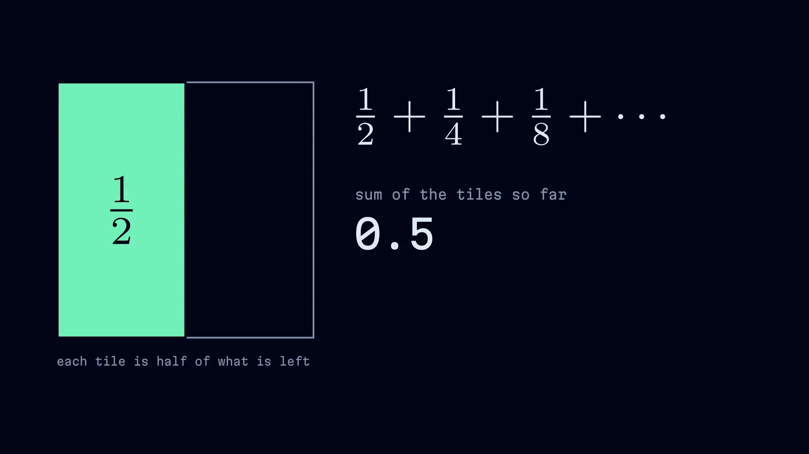

a brief for showtime
the plan
119.7 bpm
Type
Depth
Math
Proof
ST.seek(t): same t, same frame.

showtime receipt <job>
Describe a video. Your agent directs. Your machine renders.
github.com/FavioVazquez/showtime · open source, MIT
Music: “Born Of The Sky”, Scott Buckley (CC BY 4.0) · Data: NOAA GML / Scripps
SHOWTIME 0.3.0 · SHOWREEL
1080p30 · rendered locally